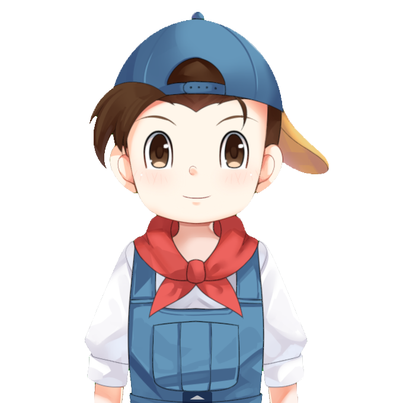

关于本站
About Us
矿石镇的伙伴们
本站萌生于百度矿石镇吧，在第九海盗的 矿石镇专题站 关闭后，为方便查询与记录游戏攻略，所开设的个人网站。
目标是记录牧场物语系列、符文工房系列等游戏的攻略。但是一人整理，并且时常摸鱼，所以进展缓慢。
诞生的直接原因是看不惯某极〇网和某樱桃小〇〇的吃相难看，他们本来可能是国内最好的牧场物语系列游戏攻略网站。
用爱发电
本站用爱发电，不以盈利为目的，因域名、服务器等支出，持续亏损中。
自2015年建站至今，累计花费￥4,000+ （2020年7月7日）
因担忧未来亏损过大而关站，已将网站内容采用  协议开源至 Github
协议开源至 Github
特别鸣谢
| 第九海盗游戏社区 |
|---|
| 托马斯 |
| 百度矿石镇吧 |
| 焕翼ssky绽羽、冰岚之梦、平步清芸 |
| 御坂网络 |
| Misaka030 |
| 重聚矿石镇攻略汉化组 |
| 我本是妖魔、西西弗斯、极夜、爱砂、翅膀、咚咚噗、淡雪、Evangelia、ForesDan、孩子们与岛、礦石鎮的橙子、N、Tabris、小黄仁、西棋、赵灿、织言、カズキ |
| 以及其他在本站建设过程中提供过帮助的朋友们。 |
其他事项

您在使用本站中所遇任何问题，请发送邮件至本站邮箱进行咨询。
friends@mineraltown.net
站长因日常摸鱼、迫于生计在打工等原因，并不能及时回复，请耐心等待。
mineraltown.net © 2020 · 矿石镇